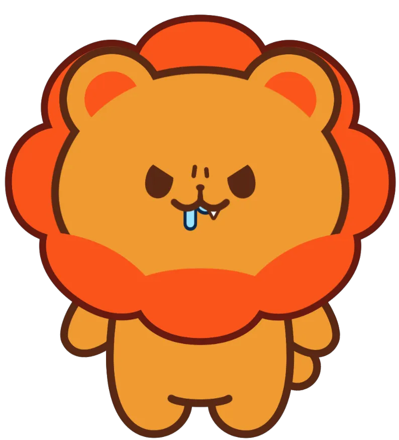

MINECRAFT · TAROT · TALK
언제 들어와도
반가운 방송,
춘봉.
춘봉의 방송 일정, 공지, 다시보기, 핫클립, 팬아트, 유튜브를 각각의 전용 페이지에서 편하게 만나보세요.

OFFICIAL CHANNELchunbongtv
CHUNBONG FAN HUB
춘봉 팬사이트
보고 싶은 메뉴를 선택하세요.
MINECRAFT · TAROT · TALK
춘봉의 방송 일정, 공지, 다시보기, 핫클립, 팬아트, 유튜브를 각각의 전용 페이지에서 편하게 만나보세요.

CHUNBONG FAN HUB
보고 싶은 메뉴를 선택하세요.